Lab3: ToF
Xingzhi Qian (xq87)
Lab 3
Goals
-
The goal of this lab is to equip the robot with distance sensors and prepare for the future labs.
Prelab
-
I2C address: The VL53L1X uses the default 7-bit I2C address
0x29. -
Using two ToF sensors: Since both sensors share
0x29, I will use the XSHUT pins to enable one sensor at a time, assign it a new I2C address in software, then enable the second sensor and assign a different address so both can run on the same bus. - Placement & missed obstacles: I will mount the sensors on the front-left and front-right of the robot to widen coverage. The robot may still miss thin objects (e.g., chair legs), low obstacles below sensor height, transparent/reflective surfaces (glass/mirrors), or obstacles at steep angles that reflect IR away from the receiver.
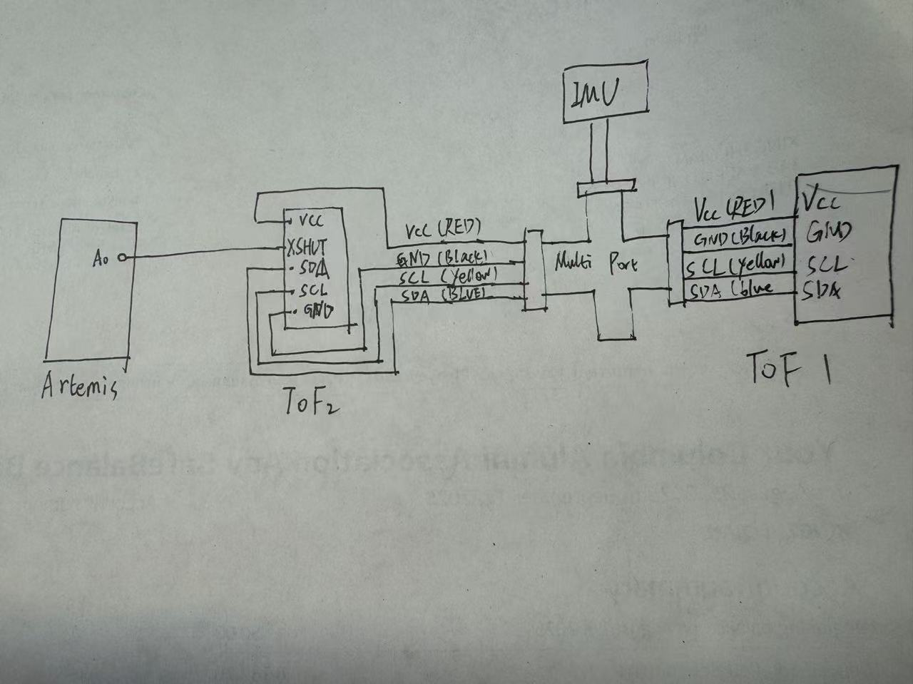
Lab Tasks
Battery
-
I powered the Artemis with a 650mAh battery and a JST connector. I separated and cut the two battery wires one at a time to prevent short circuits, then soldered them to the JST jumper and insulated the joints with heat shrink tubing. After verifying the correct polarity, I powered the board using only the battery and confirmed normal wireless operation through BLE communication.
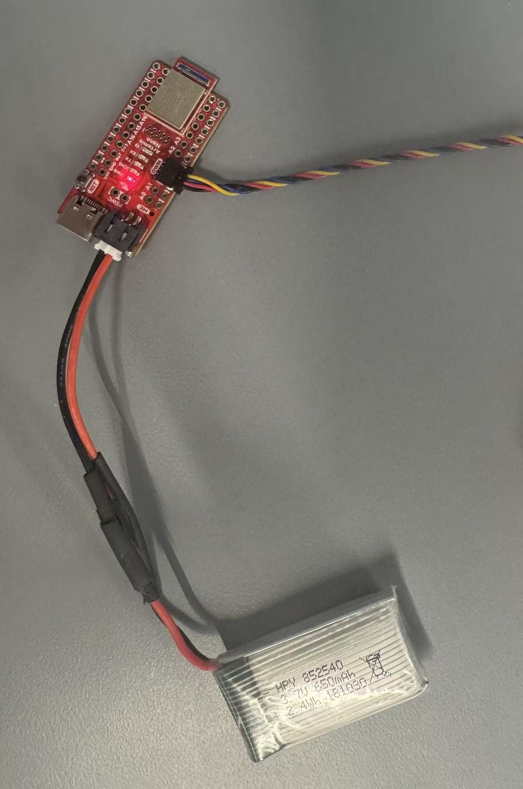
ToF Sensor Setup and Connection
-
In this step, I installed the SparkFun VL53L1X 4m Laser Distance Sensor library using the Arduino Library Manager. I connected the QWIIC breakout board to the SparkFun Artemis and attached the first ToF sensor using a QWIIC cable. After selecting a suitable cable length, I cut one end and soldered it to the sensor. Following the QWIIC standard, I connected the blue wire to SDA, the yellow wire to SCL, the red wire to 3.3V, and the black wire to GND. Since the sensor uses I²C communication, correct wiring of SDA and SCL was essential. After verifying the solder connections, the physical setup was completed.
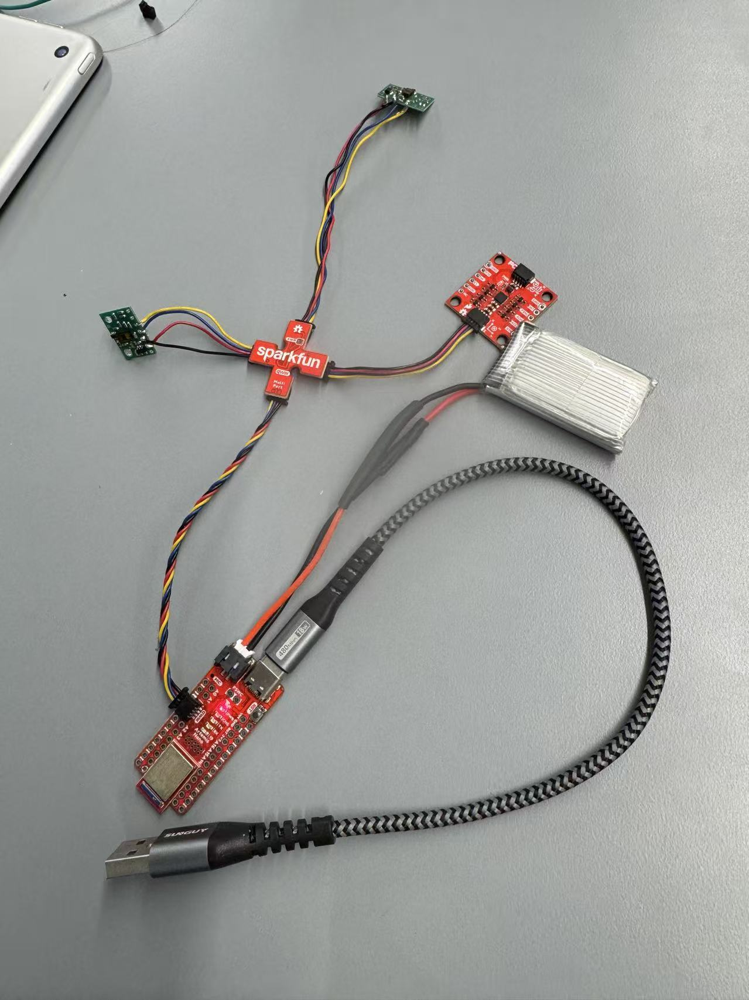
I2C Scan and Address Verification
-
I opened Example05_wire_I2C from the Apollo3 Wire examples and ran the code to scan the I2C bus. The sensor’s I2C address was successfully detected and matched the expected default address, confirming proper communication.
-
I tested the selected ToF distance mode using the SparkFun example
Example1_ReadDistance. I collected repeated measurements at several known true distances (60, 180, 300, 420, and 540 mm), logged the data to CSV, and analyzed the range performance in Python by computing the mean, standard deviation (repeatability), measurement error, and average ranging time per sample. -
Using the pre-lab setup strategy, I connected two VL53L1X ToF sensors on the same I2C bus
and brought them up simultaneously by assigning distinct I2C addresses (e.g., 0x29 and 0x30).
I verified that both sensors were streaming distance readings in real time, demonstrating that
they can operate together reliably without using the
Example05_wire_I2Cscanner (which is not recommended for multi-sensor setups). -
I implemented a non-blocking loop that continuously prints the Artemis timestamp and only outputs new ToF
measurements when
checkForDataReady()returns true. This prevents the code from hanging while waiting for sensor measurements. Based on the serial output, the loop runs in approximately 2–3 ms per iteration, with serial printing speed being the main limiting factor. - I modified the Lab 1 code to record synchronized, time-stamped ToF and IMU data for a fixed duration. During the sampling period, the Artemis collected sensor readings and stored them in a buffer with microsecond timestamps. After the recording window completed, the data were transmitted over BLE to the computer in structured CSV format.
-
On the Python side, I received multiple lines of data, verified successful transmission, and saved
the dataset to
task10.csvfor further analysis. The output confirms that time, ToF, and IMU measurements were logged continuously and sent reliably via Bluetooth. - I plotted the recorded ToF distance measurements against time to visualize how the range readings changed during the sampling window.
- I also plotted the IMU signals (accelerometer and gyroscope axes) against time. The traces appear irregular because I intentionally moved/shook the sensor during data collection to generate noticeable dynamics in the IMU measurements.
- I compared infrared-based distance sensing approaches. Conventional IR proximity sensors estimate distance from reflected intensity, which is simple and low-cost but strongly affected by surface reflectivity/color and ambient lighting. In contrast, a Time-of-Flight (ToF) sensor measures range from the travel time of emitted IR pulses, which is generally more robust to lighting and less dependent on surface appearance, though return strength can still affect stability.
- To evaluate ToF sensitivity to surface color/texture, I fixed the sensor-to-surface distance using the long edge of an ID card as a spacer and tested three surfaces (black smooth, white wall, and yellow rough). The results show valid measurements across all cases with small differences in measurement variability, suggesting ToF is less color-sensitive than intensity-based IR sensors but surface properties can still slightly influence measurement stability.
ToF Distance Modes Comparison
-
I reviewed the three VL53L1X distance modes and their trade-offs. Short mode (~1.3 m) typically provides faster and more stable readings at close range, making it suitable for near-field obstacle detection. Medium mode (~3 m, Pololu library only) offers a balance between range and robustness. Long mode (~4 m, default) extends the sensing distance but can be more sensitive to low reflectivity surfaces and ambient conditions, sometimes leading to noisier measurements. For the final robot, a shorter or medium range is often more practical for reliable wall/obstacle avoidance in indoor environments, while long mode is useful if longer look-ahead distance is needed.
ToF Mode Testing and Characterization
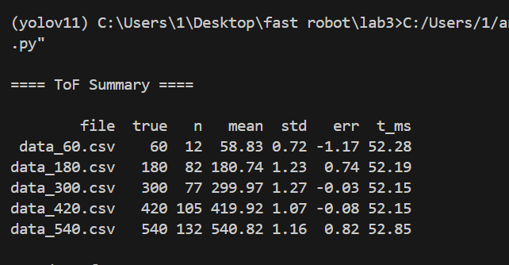
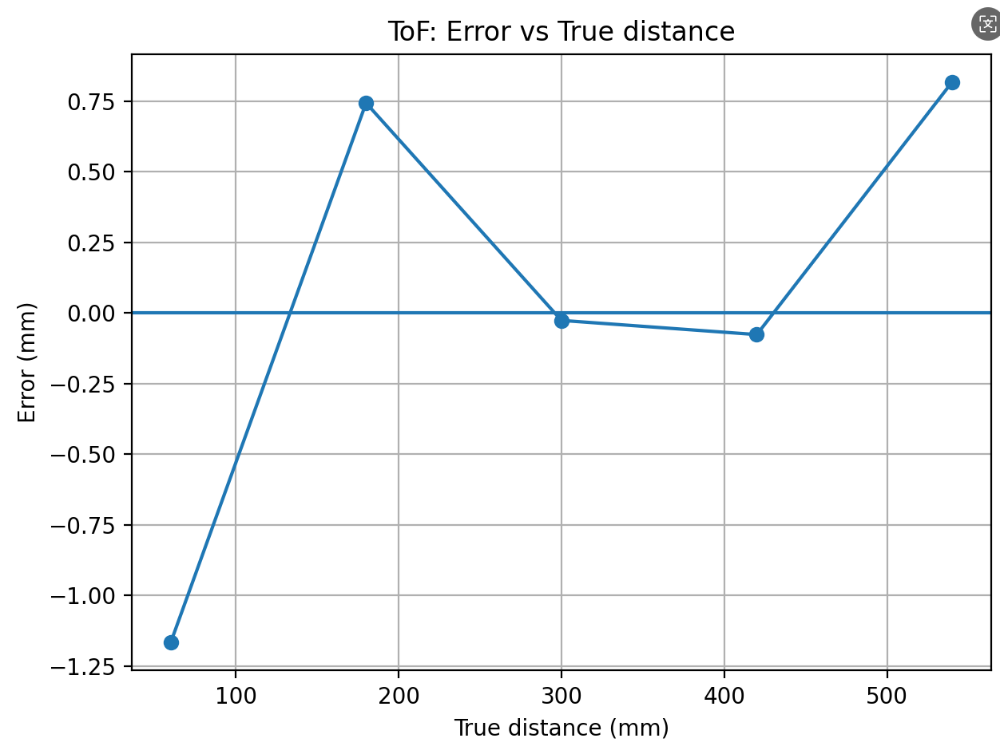
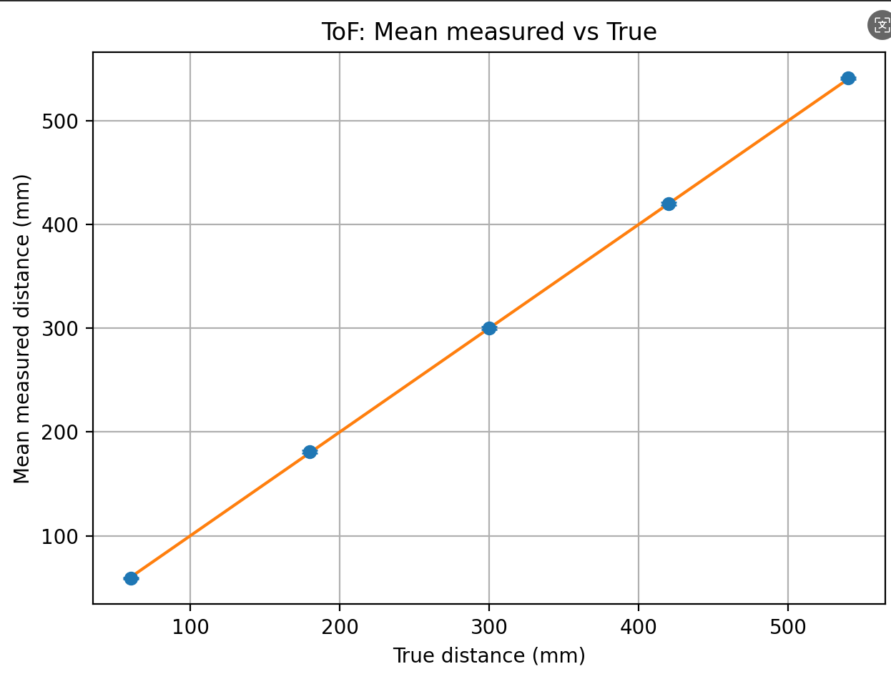
Code Snippet (Gist)
Dual ToF Sensor Bring-Up (Simultaneous Operation)
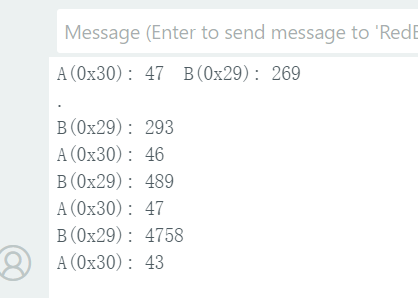
Code Snippet (Gist)
Non-Blocking Dual ToF Readout (Fast Loop Timing)
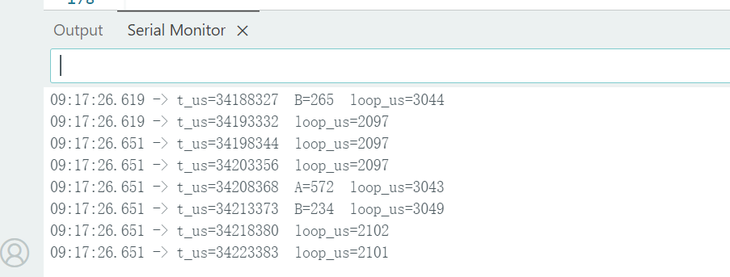
Code Snippet (Gist)
Time-Stamped ToF and IMU Data Logging over BLE
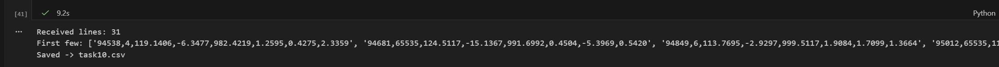
ToF and IMU Plots vs Time
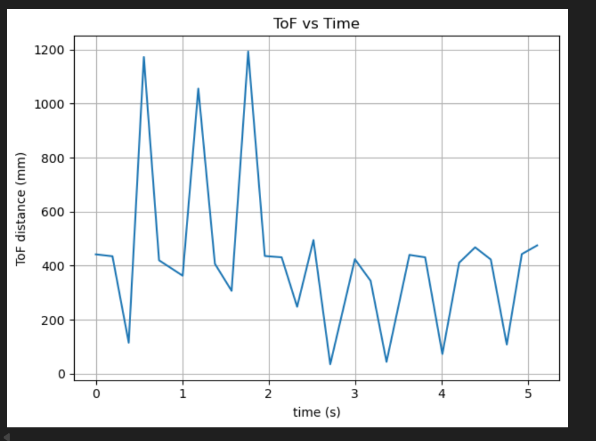
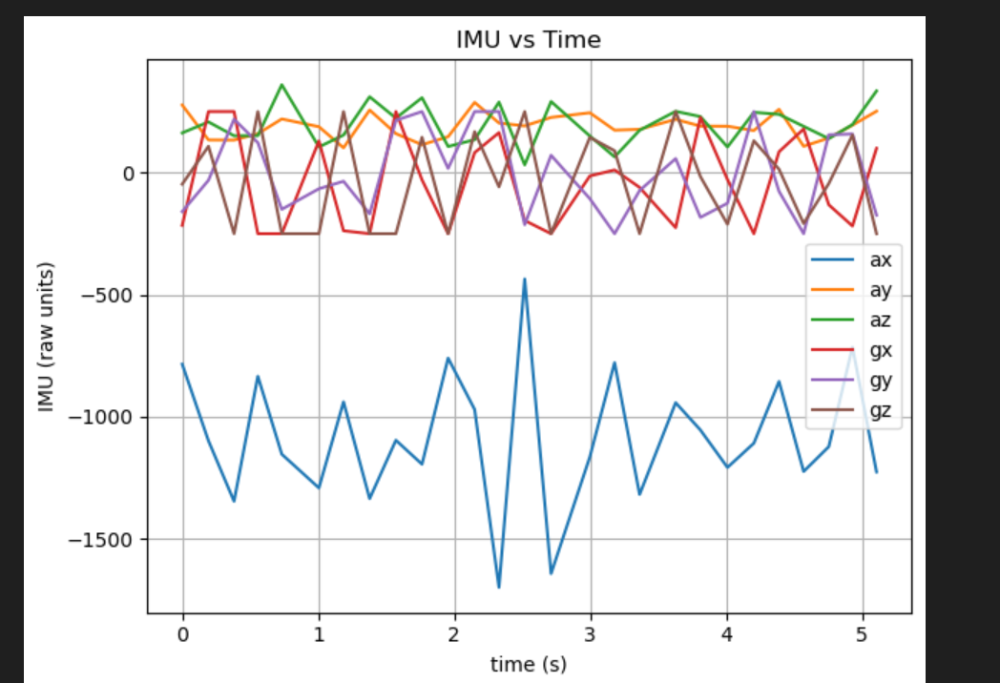
ToF Surface Sensitivity Test (5000-level)
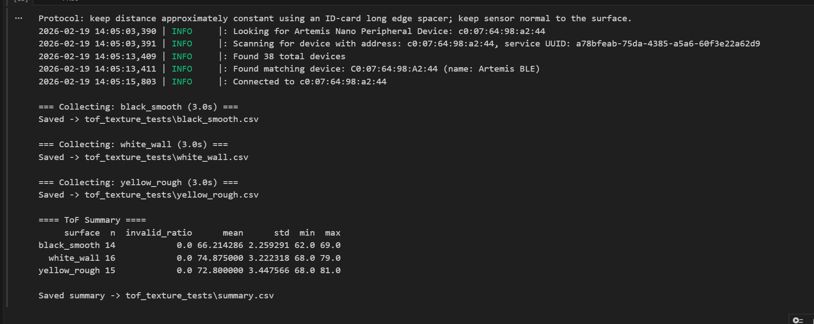
Code Snippet (Gist)
Appendix
1. An announcement of AI usage
I used AI tools to support parts of this lab, mainly for webpage/HTML formatting, minor code edits and debugging, and polishing the written explanations for clarity and conciseness. Throughout the assignment, I verified the suggestions against the lab requirements, tested changes on my own setup, and made final design and implementation decisions independently based on my own understanding.